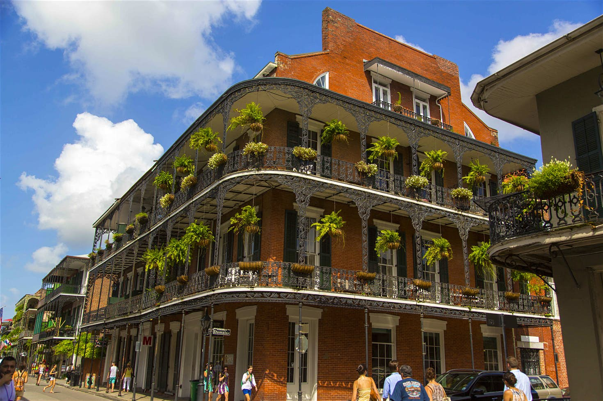

Here are a few places where I've gone on vacation:
- Daytona Beach
- New Orleans
- Cumberland Gap
Here are a few places where I've gone on vacation:
Daytona Beach
I went on vacation with my family here as a teenager. This was the first time I had ever seen the ocean.
New Orleans
I went to New Orleans with friends. We spent a few late nights on Bourbon Street, then had Beignets with coffee for breakfast.
Cumberland Gap

My girlfriend and I spent time here at a bed and breakfast for our anniversary. The small town contained a wealth of history, along with beautiful scenery.